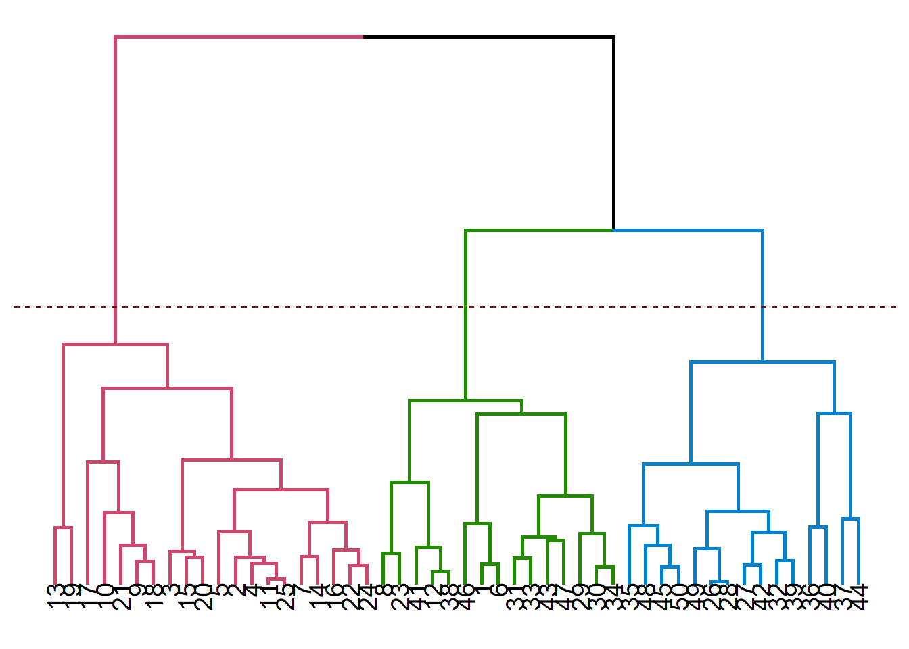

Let us shortly go through cluster Analysis. You can see on the plot below the observation numbers in the dataset. This is going to make it easier to connect it to the dendrograms. Visual inspection doesn’t reveal much as to how many clusters we should choose to go with.
Dendrograms allows us to make guided decisions on how to split the data set into clusters. We should start looking at a dendrogram bottom-up, and try to create new clusters only after moving up relatively high without encountering horizontal branches.
Remember that the vertical lengths correspond to distances (depends on the distance measure used in constructing the dendrogram), this should give you the biggest clues to match dendrograms to plots.
You can see below the cases of 2, 3 and 4 clusters visualized on dendrograms. It is useful to remember that there is no single best solution when doing cluster analysis, even seemingly useless cluster solutions might have their own benefits in particular use cases.

While this is not the only way to choose the number of clusters, now that we have some insight about the data set, we can use it to guide our choice of number of clusters. Using 4 clusters seem a bit like overdoing it, so you can see below the solutions for 2 and 3 clusters using K-means.
Note that K-means and hierarchical clustering solutions are not the same. Even K-means solutions themselves are not perfectly consistent throughout different runs, due to initial placements of centroids being random. But you can see a recurring pattern, as the observations that alternate between different clusters are those the algorithm is not really sure where to place.
Consult to the following post for a very nice explanation of linkage methods, their advantages and disadvantages.
Cluster Analysis assigns each row to a specific cluster. This comes in the form of a new column in terms of data analysis. We can use this column for filtering, aggregation and cross tabular operations to reach some insights (e.g. learning about customer segments, which segment to target for a specific campaign).
Cluster Analysis interpretation is very open to speculation, as it is not always the case to find stable cluster solutions. Any interpretation should rely on the fact that cluster analysis groups together the observations
Logistic regression is a very useful and commonly used method for predicting an event that has two possible outcomes. It also able to determine which features are the strongest in terms of affecting the outcome of this event.
It is actually the first and only supervised method we’ve dealt with in the scope of our lecture. It has a somewhat simple structure resembling that of linear regression, but thanks to the link function logistic regression uses, we are always getting values between 0 and 1, which corresponds to the predicted probability that the event question takes place (or not).
Odds ratios play a central role in doing and interpreting logistic regression and they have an inherent relation to probabilities. This is the relation we will be using to predict the probability of an event occurring. The logistic regression is a generalized linear model, which means that it does not assume a linear relationship between the dependent variable and the combination of explanatory variables.
\[ odds = \frac{p}{(1-p)}\] Using some properties of the exponential function,
\[ log(odds) = \beta_{0} + \beta_{1}X_{1} + \beta_{2}X_{2} + ...\] becomes…
\[ odds = e^{\beta_{0} + \beta_{1}X_{1} + \beta_{2}X_{2} + ...} \] The expression above is the reason why we use the exponential function when we want to learn about the effects of a particular coefficient in the logistic regression output on the odds that an event happening. Because odds are related linearly to a particular combination \(\beta_{i}X_{i}\).
Using the expression for odds, we can also get the expression for p, the probability of the focal event happening.
\[ p = \frac{odds}{1 + odds} \] We can therefore easily see that an odds ratio of 3 corresponding to a probability of 75%. In other words, “odds of this happening is three to one”!
Substituting the odds ratio, we can get the expression for extracting the probabilities out of a logistic regression model. You can see that there is no linear relationship between a particular combination \(\beta_{i}X_{i}\) and the probability that our happening. That is the reason why we cannot directly get probabilities using the estimated coefficents in a logistic regression output.
\[ p = \frac{e^{\beta_{0} + \beta_{1}X_{1} + \beta_{2}X_{2} + ...}}{1 + e^{\beta_{0} + \beta_{1}X_{1} + \beta_{2}X_{2} + ...}} \]
In any type of regression analysis, dummy variables play an integral role in helping the analyst interpret qualitative/categorical variables in a quantitative context. You can see below a portion of our data set. Each row corresponds to a purchase decision and some associated acts of marketing. Pass is equal to 1 if a season pass purchase took place, 0 otherwise. The other columns, however, are bit more interesting.
We can see that the Channel column can take up three different values; Park, Mail and E-Mail. The Promo column on the other hand can take up two values; Bundle and no Bundle.
Because we want these columns to make some sense, we’ll be using dummy variables to transform these into a form that logistic regression algorithm can understand, which is numbers of course.
We don’t need to do it by hand since logistic regression does that for you (you might need to transform these into dummies by yourself when running other methods)
## Channel Promo Pass
## 989 Mail NoBundle 1
## 502 Park Bundle 1
## 286 Park Bundle 1
## 1954 Mail Bundle 0
## 3059 Email NoBundle 0
## 1296 Park NoBundle 1
## 1373 Park NoBundle 1
## 2365 Mail NoBundle 0
## 544 Park Bundle 1
## 1668 Mail Bundle 0Basically, converting the table above to contain dummy variables would look something like below. Notice that dummies for e-mail channel and NoBundle case are missing. This happens to ensure that our columns are not linearly dependent. Linear dependency causes the issue known as perfect multicollinearity which prevents the analyst to do any sort of regression analysis (linearly dependent columns = uninvertible matrix = no solution for regression)
## Channel Promo Pass Channel_Mail Channel_Park Promo_Bundle
## 1 Mail NoBundle 1 1 0 0
## 2 Park Bundle 1 0 1 1
## 3 Park Bundle 1 0 1 1
## 4 Mail Bundle 0 1 0 1
## 5 Email NoBundle 0 0 0 0
## 6 Park NoBundle 1 0 1 0
## 7 Park NoBundle 1 0 1 0
## 8 Mail NoBundle 0 1 0 0
## 9 Park Bundle 1 0 1 1
## 10 Mail Bundle 0 1 0 1We need a benchmark model to see whether our own models perform better than the base model, the case in which we don’t include any explanatory variables.
\[ p = \frac{e^{\beta_{0}}}{1 + e^{\beta_{0}}} \]
The expression above deals with population (real) parameters. We don’t have access to probabilities of this particular purchase event happening. We only have records of it happening or not, we’ll be using these as our dependent variable and estimate the sample estimator \(\hat{\beta{i}}\) of \(\beta{i}\).
These are very important concepts in statistics but we only need to make this distinction to make sure we know that the coefficients we’re getting from regression analyses are merely estimations of true values we can’t ever know. That’s why we are interested in statistical significance and confidence intervals when assessing and interpreting the model output.
Yes, the coefficients we’re getting in the regression analysis output are \(\hat{\beta{i}}\).
##
## Call:
## glm(formula = Pass ~ 1, family = binomial, data = passdf)
##
## Deviance Residuals:
## Min 1Q Median 3Q Max
## -1.183 -1.183 1.171 1.171 1.171
##
## Coefficients:
## Estimate Std. Error z value Pr(>|z|)
## (Intercept) 0.01394 0.03560 0.392 0.695
##
## (Dispersion parameter for binomial family taken to be 1)
##
## Null deviance: 4375 on 3155 degrees of freedom
## Residual deviance: 4375 on 3155 degrees of freedom
## AIC: 4377
##
## Number of Fisher Scoring iterations: 3To see that the intercept is related closely to the average (when the effects of the explanatory variables are discounted), look at the expression below. We used the intercept coefficient in the model and the value we are getting is
\[ p = \frac{e^{0.01394}}{1 + e^{0.01394}} = 0.5034 \] This value is identical to the empirical (observed) probability of the pass purchase event happening.
\[ \bar{p} = \frac{1\times I[Pass = 1] + 0\times I[Pass = 0]]}{N} = \frac {1589}{3156} = 0.5034\] The reason we’re using this model as benchmark is actually this fact: is the model we are using actually any better than simply taking the average?
\[ p = \frac{e^{\beta_{0} + \beta_{1}Promo}}{1 + e^{\beta_{0} + \beta_{1}Promo}} \]
The model that we’re estimating is shown above.The Promo variable is the dummy variable. It equals 1 when Promo is available, 0 otherwise.
##
## Call:
## glm(formula = Pass ~ Promo, family = binomial, data = passdf)
##
## Deviance Residuals:
## Min 1Q Median 3Q Max
## -1.262 -1.097 1.095 1.095 1.260
##
## Coefficients:
## Estimate Std. Error z value Pr(>|z|)
## (Intercept) -0.19222 0.05219 -3.683 0.000231 ***
## PromoBundle 0.38879 0.07167 5.425 5.81e-08 ***
## ---
## Signif. codes: 0 '***' 0.001 '**' 0.01 '*' 0.05 '.' 0.1 ' ' 1
##
## (Dispersion parameter for binomial family taken to be 1)
##
## Null deviance: 4375.0 on 3155 degrees of freedom
## Residual deviance: 4345.4 on 3154 degrees of freedom
## AIC: 4349.4
##
## Number of Fisher Scoring iterations: 3Remember that this is what we need to interpret the model, as this is the most simple linear relation we can get. In order to interpret probabilities, we’ll need another approach.
\[ odds = {e^{\beta_{0} + \beta_{1}Promo}} \] So, basically when Promo = 1, this equation becomes the expression below. We can see that the intercept has changed. We can also see that \(e^{0.388}\) is a factor that multiplies the base odds ratio (in the context of this particular model!). We know that $e^{0.388} = 1.47403 $ and that it means the being exposed to promo is associated with 47% increased odds of purchasing the season pass.
\[ odds = {e^{-0.192 + 0.388}} = e^{0.388}e^{-0.192} \]
Now pay attention to what’s happening below. We are dealing with our categorical variable with 3 levels (Mail,Park,eMail) and that we cannot observe eMail anywhere in the expression below! No worries, nothing is wrong here. But we need a different perspective here to interpret the results we have received.
\[ p = \frac{e^{\beta_{0} + \beta_{1}Promo + \beta_{2}Mail + \beta_{3}Park}}{1 + e^{\beta_{0} + \beta_{2}Mail + \beta_{3}Park}} \]
One thing to note here is that Mail and Park cannot be equal to 1 at the same time because they are mutually exclusive by definition! Since the Channel variable could take up only 1 of mail, park and e-mail at a time, the same logic applies here as well. So, when both mail and park variables equal to 0, that means the active channel is the e-mail channel!
But the most important thing is the following, let us calculate the odds for the case that we have promotion bundle and we are using the mail channel.
\[ p = \frac{e^{-2.078 -0.5602\times 1 + 2.1761 \times 1 + 3.72 \times 0}}{1 + e^{-2.078 -0.5602\times 1 + 2.1761 \times 1 + 3.72 \times 0}} \]
##
## Call:
## glm(formula = Pass ~ Promo + Channel, family = binomial, data = passdf)
##
## Deviance Residuals:
## Min 1Q Median 3Q Max
## -1.9079 -0.9883 0.5946 0.7637 2.3272
##
## Coefficients:
## Estimate Std. Error z value Pr(>|z|)
## (Intercept) -2.07860 0.13167 -15.787 < 2e-16 ***
## PromoBundle -0.56022 0.09031 -6.203 5.54e-10 ***
## ChannelMail 2.17617 0.14651 14.854 < 2e-16 ***
## ChannelPark 3.72176 0.15964 23.313 < 2e-16 ***
## ---
## Signif. codes: 0 '***' 0.001 '**' 0.01 '*' 0.05 '.' 0.1 ' ' 1
##
## (Dispersion parameter for binomial family taken to be 1)
##
## Null deviance: 4375.0 on 3155 degrees of freedom
## Residual deviance: 3490.2 on 3152 degrees of freedom
## AIC: 3498.2
##
## Number of Fisher Scoring iterations: 4\[ odds = {e^{-0.2078 -0.5602 +2.1761 }} = e^{2.161}e^{-0.5602}e^{-0.2078} \] So, compared to the case where no promo using the channel e-mail, using promo and the mail channel is associated with 5.03 times increased odds of seeing a pass purchase decision. Because $ e{2.161}e{-0.5602} = 5.0324$.
We should always be careful what we are comparing our interpretation against, as the base case is only implied when we are using dummy variables.
In order to calculate the probability corresponding to the particular case above, we’ll be using the p formula. This gives us a probability of 0.386, which seems to be worse than doing nothing (compare this against model 0, where the predicted probability was 0.50)
Model 3 is only different in that it includes interaction terms. We use interaction terms to see if there is an amplified or a dampened effect when we are using more than two treatments at once. There may be an unintended interplay between, let’s say, using Promo through the park channel.
\[ p = \frac{e^{\beta_{0} + \beta_{1}Promo + \beta_{2}Mail + \beta_{3}Park + \beta_{4}Promo \times Mail + \beta_{5} Promo\times Park}}{1 + e^{\beta_{0} + \beta_{1}Promo + \beta_{2}Mail + \beta_{3}Park + \beta_{4}Promo \times Mail + \beta_{5} Promo\times Park}} \]
We can see that the coefficients related to interaction effects are significant. This tells us that some other mechanism is at play here. Obviously, the interaction effects will not be available if Promo is not active as the dummy variable corresponding to Promo will be equal to 0 (The same applies to the E-mail channel).
##
## Call:
## glm(formula = Pass ~ Promo + Channel + Promo:Channel, family = binomial,
## data = passdf)
##
## Deviance Residuals:
## Min 1Q Median 3Q Max
## -1.9577 -0.9286 0.5642 0.7738 2.4259
##
## Coefficients:
## Estimate Std. Error z value Pr(>|z|)
## (Intercept) -2.8883 0.1977 -14.608 < 2e-16 ***
## PromoBundle 2.1071 0.2783 7.571 3.71e-14 ***
## ChannelMail 3.1440 0.2133 14.743 < 2e-16 ***
## ChannelPark 4.6455 0.2510 18.504 < 2e-16 ***
## PromoBundle:ChannelMail -2.9808 0.3003 -9.925 < 2e-16 ***
## PromoBundle:ChannelPark -2.8115 0.3278 -8.577 < 2e-16 ***
## ---
## Signif. codes: 0 '***' 0.001 '**' 0.01 '*' 0.05 '.' 0.1 ' ' 1
##
## (Dispersion parameter for binomial family taken to be 1)
##
## Null deviance: 4375.0 on 3155 degrees of freedom
## Residual deviance: 3393.5 on 3150 degrees of freedom
## AIC: 3405.5
##
## Number of Fisher Scoring iterations: 5\[ p = \frac{e^{-2.88 + 2.10Promo + 3.1440Mail + 4.64Park -2.98Promo \times Mail -2.81 Promo\times Park}}{1 + e^{-2.88 + 2.10Promo + 3.1440Mail + 4.64Park -2.98Promo \times Mail -2.81 Promo\times Park}} \] Let us compute the probability of using the e-mail channel as part of a bundle. Due to both Park and Mail being equal to 0, these are terms we are left with
\[ p = \frac{e^{-2.88 + 2.10Promo}}{1 + e^{-2.88 + 2.10Promo }} = 0.315 \]
We can see that using e-mail as part of a bundle is actually not a good idea.
On final note about confidence intervals:
We can see below that the confidence intervals for the odds are quite wide. This is not surprising as the model is not trying to estimate the odds ratios but rather the coefficients in the generalized linear model (in our case, logistic regression). You can see that, none of the significant variable include 1 in their confidence interval (which is the ineffective element when thinking about odds ratios.)
## 2.5 % 97.5 %
## (Intercept) 0.03688720 0.08032263
## PromoBundle 4.78970184 14.31465957
## ChannelMail 15.54800270 35.97860059
## ChannelPark 64.74364028 173.57861021
## PromoBundle:ChannelMail 0.02795867 0.09102369
## PromoBundle:ChannelPark 0.03135437 0.11360965There are quite a few ways to evaluate how a good a prediction model is doing. One way is to see how well it did in predicting each class (in this case 0 and 1). We have the hit rate metric, which calculates the share of true positives and true negatives among all predictions.
## hit0
## y 1 Sum
## 0 1567 1567
## 1 1589 1589
## Sum 3156 3156For model 0, the benchmark model, you can see that the model made no 0 predictions, all the predictions were 1! This still gives a hit rate of over 0.5! Not actually better than flipping a coin. (1589/3156 = 0.503)
## hit1
## y 0 1 Sum
## 0 812 755 1567
## 1 670 919 1589
## Sum 1482 1674 3156Model 1 on the other hand is only slightly superior to the benchmark model in terms of hit rate (812 + 919 = 1731/3156 giving us a hit rate of 0.5484).
## hit2
## y 0 1 Sum
## 0 1017 550 1567
## 1 307 1282 1589
## Sum 1324 1832 3156After the addition of the channel variable, the model gets more accurate. With a hit rate of 0.728 it is vastly superior to the previous models. (1017 + 1282 = 2299/3156 -> 0.728)
## hit3
## y 0 1 Sum
## 0 1017 550 1567
## 1 307 1282 1589
## Sum 1324 1832 3156The third model doesn’t make any difference in terms of prediction quality as the interaction terms are mostly for investigating the effects of explanatory variables on the dependent variables, rather than improving the prediction quality.